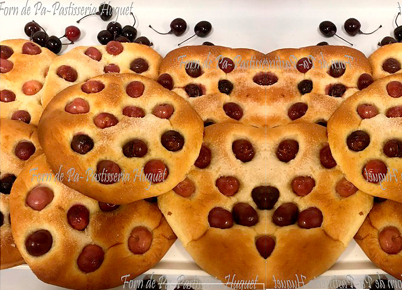
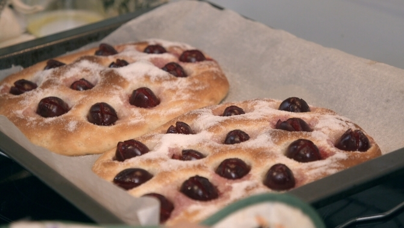
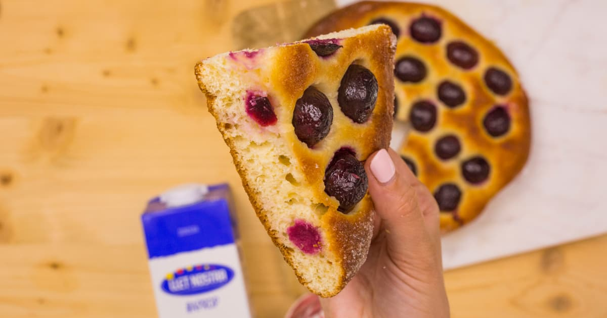

La historia que nadie planeó: de la harina sobrante a la tradición de todo un pueblo
Hay tradiciones que nacen de un decreto, de una festividad religiosa o de la voluntad de un alcalde. La de la coca amb cireres no. Nació de la necesidad, de la frugalidad y de un gesto tan sencillo como generoso. Corría el siglo XIX. Reus era ya una ciudad próspera —llegó a ser la segunda más poblada de Cataluña— y contaba con más de cien hornos de pan repartidos por sus calles. En el entorno de la plaça de la Farinera, donde se pesaba y comerciaba con la harina, un hombre del barrio acumulaba cada temporada los restos de harina que se desprendían de los sacos en el proceso de pesado.
Una vez al año, cuando llegaba el Corpus, aprovechaba esa harina acumulada junto con las cerezas del momento —que de no usarse pronto acabarían echándose a perder— y elaboraba unas coques sencillas. No las vendía. Las repartía gratuitamente entre los niños del barrio, justo antes de que salieran a ver bailar los gegants y la Mulassa en la plaça del Mercadal. El gesto era humilde, pero el efecto fue duradero: la coca, los gegants y el Corpus quedaron asociados en la memoria colectiva de la ciudad para siempre.

Plaça del Mercadal · Corpus de Reus · Los gegants bailan mientras los escolares comen coca amb cireres
La cirera negreta: la protagonista que casi nadie ha probado
La coca amb cireres tiene un ingrediente fetiche que ya casi no existe: la cirera negreta. Es una variedad tardana, pequeña, de carne dura y de un color casi negro. Tan dulce que se pegaba al paladar. En tiempos en que todavía se cultivaba, los vecinos que tenían cerezos en casa o en el huerto llevaban sus propias negretes al horno para que las incorporaran a la coca. Cada familia hacía una señal en la masa para identificar la suya —un corte, una marca, una forma— y volvía a recogerla ya cocida. Un ritual de comunidad tan cotidiano como entrañable.
Hoy la negreta no se comercializa. Quien quiera una coca a la antigua usanza tiene que conocer a alguien con un cerezo en el mas o en el huerto. Las coques actuales se elaboran con variedades comerciales, que hacen bien su papel pero que no producen aquel almíbar oscuro y casi violeta que dejaban las negretes al cocerse sobre la masa espolvoreada de azúcar. Quien la haya probado una vez dice que no hay comparación posible.
La cereza propia de las coques es la llamada negreta: tardía, pequeña, de carne dura, casi negra y tan dulce que se pega al paladar. Es la que hace que, una vez sobre la masa y cubierta de azúcar, suelte ese almíbar exquisito color de vino.
Mariona Quadrada · Cuinera reusenca


Tres maneras de hacer la coca: cada horno tiene la suya
La de pasta de brioix · La más popular hoy
Masa esponjosa elaborada con mantequilla, huevos, leche y levadura de pan. Es la que encontraréis en la mayoría de forns y pastisseries del Camp desde mediados de mayo. Absorbe el jugo de la cereza durante la cocción y queda blanda, húmeda, con ese punto de azúcar caramelizado en la superficie. Es la versión que el Ajuntament de Reus reparte entre los más de 5.000 vecinos que cada Corpus se concentran en la plaça del Mercadal a ver bailar los gegants.
La de pasta de pa estirada · La más antigua
Pasta de panadero extendida fina, regada con aceite y espolvoreada con abundante azúcar. El resultado es más crujiente, más austero, más cercano a lo que debía ser la coca original del pesador de la farinera. Hoy es la menos común pero la más valorada por quienes la conocen: tiene esa textura quebradiza que contrasta con el almíbar de la cereza y que da ganas de repetir.
El cóc ràpid · La versión casera
La más doméstica de las tres. Una masa rápida con anís o licor, cubierta completamente de cireres negretes, aceite y azúcar. No requiere mucho tiempo de fermentación ni técnica especial. Es la que se hacía —y se sigue haciendo— en las casas de pueblo cuando alguien tiene cerezas de su árbol y ganas de hacer algo con ellas antes de que se pasen.

Coca amb cireres de pasta de brioix · La versión más popular en los forns del Camp de Tarragona
El Corpus de Reus: 700 años de fiesta, gegants y coca
El Corpus Christi se celebra en Reus al menos desde el siglo XIV, impulsado originalmente por los frailes dominicos. A principios del siglo XVII, cuando la ciudad vivía un momento de expansión económica, se consolidaron los grandes elementos festivos que aún hoy definen la celebración: los Gegants bicentenaris, la Mulassa —que en 2025 celebró su 300 aniversario— y l'Àliga. La procesión, las alfombras de flores y serrín, y el famoso Ou com Balla —el huevo que baila sobre el chorro de la fuente— completan un programa que cada año convoca a miles de personas en el centro histórico.
En 1918, el alcalde accidental Artemi Aiguader recuperó institucionalmente el reparto de coques entre los niños. Aquel día se distribuyeron 2.100 coques. Hoy el Ajuntament reparte más de 5.000 cada Corpus, con la colaboración de forns locales como el Forn Sistaré. La coca ha pasado de ser un gesto de barrio a ser un acto cívico. Las pastelerías la venden —y hacen bien en hacerlo—, pero el reparto del ayuntamiento sigue siendo gratuito. La esencia del gesto original no ha cambiado.
Fuentes consultadas: Wikipedia (Coca amb cireres), TarragonaDigital, Diari Mes, VilàWeb, El Nacional, Forn Huguet, El Gourmet Català, Ajuntament de Reus
Más curiosidades gastronómicas del Camp
 Curiositats
Curiositats
Reus, París, Londres · La capital mundial del vermut
Del aguardiente al aperitivo más elegante de Europa. Yzaguirre, Miró, Rofes... La historia de cómo Reus se convirtió en referencia mundial.
Leer → Curiositats
Curiositats
Jean Leon · El taxista de Beverly Hills que cambió el vino español
Ceferino Carrión cruzó los Pirineos a pie y sirvió la última cena a Marilyn Monroe.
Leer →